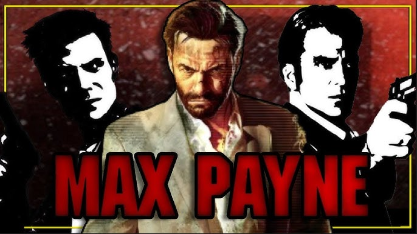

Juegos Icónicos
Algo por lo que es conocida esta desarrolladora es por los videojuegos que realizan, alguno de los mas conocidos los siguientes:
Saga Grand Theft Auto V
El primer videojuego realizado por esta desarrolladora fue en 1997. Desde entonces,
la saga Grand Theft Auto ha evolucionado hasta llegar a GTA V, uno de los títulos más exitosos.
Actualmente, los fans esperan con emoción el lanzamiento de Grand Theft Auto VI.
Saga Red Dead Redemption o Red Dead Revolver
Esta saga nos transporta al viejo oeste con una narrativa profunda y personajes memorables.
Red Dead Redemption 2 es considerado una obra maestra por su mundo abierto y realismo.

Bully
Bully nos pone en la piel de un estudiante rebelde en una escuela privada.
Con humor y crítica social, este juego aunque su primera y ultima entrega lanzada en el año 2006 se ha convertido en un clásico inesperado de Rockstar con gente con la esperanza de ver una nueva entrega de este videojuego.

Saga Max Payne
Max Payne es una saga de disparos en tercera persona con una atmósfera oscura y narrativa tipo novela negra. El protagonista, un ex policía marcado por la tragedia, se sumerge en una historia de venganza, corrupción y dolor,lanzado en año 2001 su primer entrega y la ultima lanzada en 2012.Esta serie de videojuegos tiempo despues seria adaptada a pelicula y serie.

Saga Midnight Club
Midnight Club es una saga de carreras callejeras desarrollada por Rockstar Games que se distingue por su enfoque libre, dinámico y lleno de adrenalina llevandonos a distintos lugares como Los Angeles, Tokio, Paris, Londres y mas.
Historia de la Empresa
Rockstar Games fue fundada en 1998 como una subsidiaria de Take-Two Interactive, con sede en Nueva York. Aunque su origen está ligado a la compañía DMA Design (creadora del primer Grand Theft Auto en 1997), Rockstar tomó las riendas creativas y transformó la saga en una franquicia mundialmente reconocida.
Desde sus inicios, Rockstar se ha caracterizado por romper esquemas y apostar por experiencias narrativas profundas, mundos abiertos y temáticas controvertidas. Su filosofía se basa en crear videojuegos que no solo entretengan, sino que también generen conversación, crítica social y reflexión. Esta visión se consolidó con títulos como Grand Theft Auto III, que revolucionó el concepto de sandbox en 2001, permitiendo al jugador explorar libremente una ciudad viva y caótica.
Primer logo antes de ser adquiridos por Take-Two Interactive
Logo en la actualidad
Primer videojuego lanzado por DMA Design a finales de 1997.
Desde sus inicios, Rockstar se ha caracterizado por romper esquemas y apostar por experiencias narrativas profundas, mundos abiertos y temáticas controvertidas. Su filosofía se basa en crear videojuegos que no solo entretengan, sino que también generen conversación, crítica social y reflexión. Esta visión se consolidó con títulos como Grand Theft Auto III, que revolucionó el concepto de sandbox en 2001, permitiendo al jugador explorar libremente una ciudad viva y caótica.
Lanzado el 22 de octubre del año 2001 Grand Theft Auto 3 siendo el juego mas vendido en EE.UU en 2001 a pesar de haber salido en octubre vendiendo 5 millones de copias en su primer año
Con el paso de los años, la compañía expandió su catálogo con sagas como Max Payne, Midnight Club, Manhunt, Bully y Red Dead Redemption, cada una con su propio estilo y propuesta. En 2010, Red Dead Redemption marcó un nuevo estándar en narrativa interactiva, y en 2018, su secuela fue aclamada por su realismo, profundidad emocional y nivel técnico.
Lanzado un 26 de octubre de 2018 Red Dead Redemption 2 vendio mas de 17 millones de copias recaudando mas de $725 millones de USD en sus primeros 3 dias.
Además de sus logros técnicos, Rockstar ha sido pionera en el uso de música licenciada, actores reales para captura de movimiento y guiones dignos de cine. Su enfoque cinematográfico ha influenciado a toda la industria, y su impacto cultural se refleja en millones de jugadores que reconocen sus títulos como parte de la historia moderna del entretenimiento.
Las diferentes radios que han aparecido en el transcurso de los años contando con canciones de diferentes generos licenciadas.
Actualmente, Rockstar Games sigue siendo una de las desarrolladoras más influyentes del mundo, con millones de fans esperando el lanzamiento de Grand Theft Auto VI, que promete llevar la experiencia de mundo abierto a un nuevo nivel.

Imagen conceptual de Grand Theft Auto VI, el cual se espera su lanzamiento en 26 de mayo del 2026.